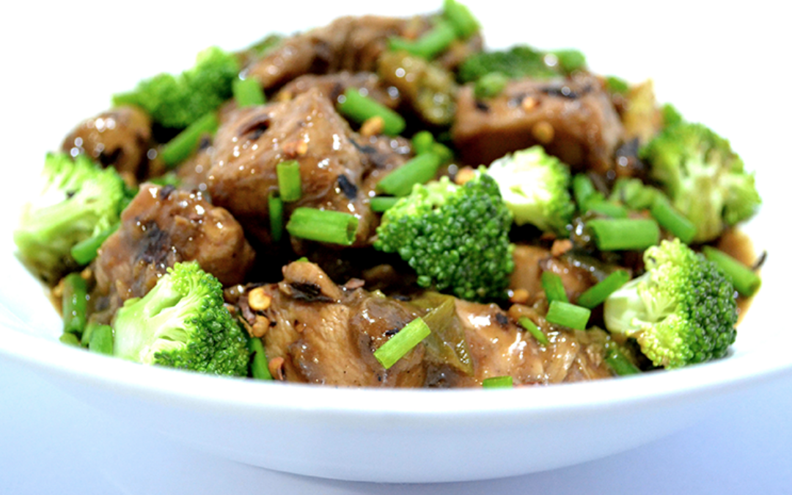

Beef Broccoli

A Chinese takeout staple, beef broccoli is one of the quickest and best ways to get both protein and veggies in one bite.
Crunchy, sweet broccoli mingles with tender and savory beef, resulting in a heavenly combination. Beef broccoli is great for all audiences: from kids who can be picky about vegetables to adults who want a quick fix for lunch or dinner.
Regardless of your age group, barely anyone can resist the savory, garlicky taste of this takeout classic. But why not just skip the takeout? In this recipe, you’ll learn how you can cook and enjoy beef broccoli from the comfort of your own home.
Ingredients
- ½ lbs beef sirloin thinly sliced>
- 1 Knorr Beef Cube
- 1 cups broccoli floret
- 2 carrots sliced
- 3 tablespoons soy sauce
- 2 tablespoons oyster sauce
- 1 teaspoon sesame oil
- 2 teaspoons brown sugar
- 2 tablespoons cornstarch
- 1 ½ cups water
- 1 onion chopped
- 1 tablespoon garlic minced
- 3 tablespoons garlic-infused oil
- 2 teaspoons toasted sesame seeds
- Salt and ground black pepper to taste
Instructions
- Heat oil in a pan. Sauté onion and garlic.
- Add beef once the onion softens. Continue cooking until the beef turns light brown.
- Pour the soy sauce into the pan along with the oyster sauce and sesame oil. Stir.
- Add Knorr Beef Cube. Pour water into the pan. Cover and then cook in low heat for 25 minutes.
- Add brown sugar, carrots, and broccoli. Cover the pan and continue cooking for 5 minutes.
- Combine cornstarch with 3 tablespoons water. Mix well. Pour the mixture into the pan. Stir and cook until the sauce thickens to your desired consistency.
- Season with salt and ground black pepper.
- Finish by adding toasted sesame seeds.
- Serve over rice. Share and enjoy!
Return to home